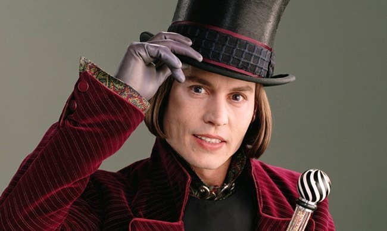
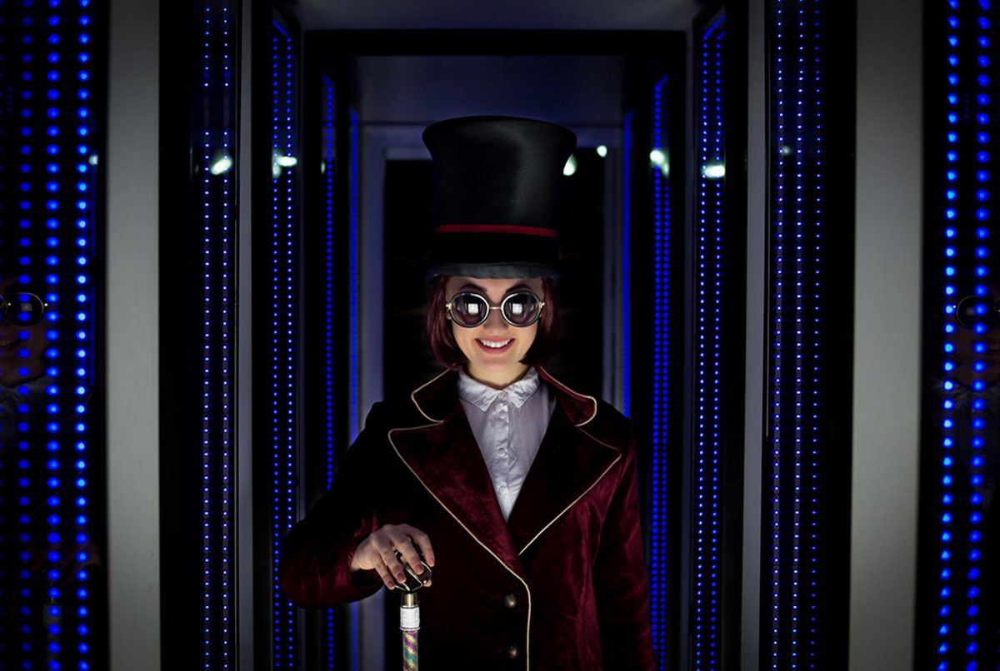

Віллі Вонка — це вигаданий шоколадний майстер, який з’явився у книзі «Чарлі і шоколадна фабрика». Він відомий у всьому світі своїми неймовірними солодощами, які не схожі ні на які інші. Його характер дуже загадковий: він і добрий, і трохи дивний, але завжди щирий і веселий. Вонка обожнює шоколад настільки, що присвятив йому все своє життя. Він любить експериментувати і придумує солодощі, які можуть співати, літати або міняти смак. 🍬🎩 Його мета — зробити світ трохи солодшим і подарувати людям радість від кожного шматочка шоколаду. З дитинства він мріяв про ідеальний смак, який би поєднував у собі щастя і спогади про дитинство. Вонка часто казав, що найкращі ідеї приходять тоді, коли ти залишаєшся дитиною в душі. Його філософія проста — створюй із любов’ю, і тоді навіть найменша цукерка стане дивом. У його серці живе віра, що солодощі здатні об’єднати людей різного віку й характеру. Саме тому він став легендою, яку пам’ятають покоління. 🍫
Шоколадна фабрика Віллі Вонки — це справжнє чарівне місце, куди мріє потрапити кожна дитина. Усередині все зроблено зі солодощів: річки з шоколаду, дерева з льодяників, а квіти можна їсти. На фабриці працюють маленькі працівники — умпа-лумпи, які допомагають Вонці створювати нові види цукерок. Тут виробляють дивовижні жувальні гумки, які заміняють цілий обід, і карамель, що ніколи не тане. 🍫 Фабрика прихована від звичайних людей, і лише діти з золотими квитками можуть побачити її всередині. Для них це велика пригода, сповнена чудес, сміху і трохи випробувань, які показують справжній характер кожного. Кожен цех має свої таємниці, і лише Вонка знає, як вони працюють. Повітря там завжди пахне шоколадом і карамеллю, а підлога виблискує, наче цукрова глазур. Дехто каже, що фабрика жива — вона відчуває емоції своїх гостей і відповідає їм добром. Умпа-лумпи створюють справжню гармонію праці й радості, співаючи свої веселі пісеньки. Це місце, де навіть дорослі знову стають дітьми. 🎠
Це офіційний трейлер фільму про Віллі Вонку. У цьому фільмі показано, яким був Вонка в молодості і як він створив свою шоколадну фабрику. Він завжди мріяв дарувати людям радість через солодощі 🍫 і ніколи не здавався, навіть коли було важко. Трейлер передає атмосферу чарівності, музики та мрій, які можуть стати реальністю 🌈. У ньому можна побачити, як із мрії народжується легенда, і як звичайний хлопець стає творцем дива. Музика у фільмі наповнює серце теплом і нагадує, що мрії не мають меж. Костюми та декорації занурюють глядача у світ фантазії та шоколаду. Головний герой постає як символ віри у добро, навіть тоді, коли навколо панує жадібність. Кожен кадр цього фільму — мов солодка казка, яку хочеться дивитися знову. 🎬
1️⃣ Віллі Вонка завжди носить фіолетовий циліндр, бо це його улюблений колір. Він вважає, що фіолетовий — колір творчості, радості та мрій. 🎩 Цей капелюх став невід’ємною частиною його образу та стилю. Без нього Вонка просто не виглядав би таким чарівним і загадковим!
2️⃣ На його фабриці працюють умпа-лумпи — маленькі веселі істоти, які люблять співати пісеньки під час роботи. 🧍♂️🧍♀️ Вони приїхали з далекої країни Лумпії, де росте какао-бобс. Умпа-лумпи щиро вірять у магію та дружбу, і завжди допомагають Вонці!
3️⃣ Вонка придумав сотні видів шоколаду: від літаючих плиток до морозива, яке не тане навіть на сонці. 🍫❄️ Його фантазія безмежна — кожен смак має свою історію. Деякі цукерки навіть можуть дарувати суперздібності на кілька секунд!
4️⃣ Потрапити на фабрику можна тільки з золотим квитком. 🎟️✨ Таких квитків надзвичайно мало, тому їх пошук — справжня пригода. Вонка дарує їх тим, хто ніколи не втрачає надії та добро в серці.
5️⃣ Віллі Вонка навчив усіх, що фантазія — це сила. 🌟 Вона допомагає бачити світ яскравішим і особливим. Мрії можуть перетворитися на реальність, якщо дуже цього хотіти!
6️⃣ Його цукерки мають особливі назви та часто поводяться по-живому. 🍬 Наприклад, жуйка, яка може перетворити тебе на чорницю. Скуштувати її — це завжди ризик і пригода одночасно!
7️⃣ Шоколадна річка на фабриці справжня і дуже смачна! 🌊🍫 Вона тече через величезні зали і живить усю фабрику шоколадом. Деякі кажуть, що Вонка іноді катається на човні з маршмелоу.
8️⃣ Вонка завжди любить загадки й несподіванки. 🤔🎁 Він ніколи не розкриває своїх секретів одразу. Кожен, хто потрапляє на фабрику, отримує унікальний досвід і урок.
9️⃣ Його лабораторія — найчарівніше місце на фабриці. 🔬✨ Там народжуються нові ідеї, які змінюють світ солодощів. Досліди інколи вибухають, але це тільки додає веселощів!
🔟 Улюблений транспорт Вонки — скляний ліфт. 🛗 Він може літати у будь-який бік: вперед, назад, догори, вниз і навіть по діагоналі! Це його символ свободи та неймовірних можливостей!
Ідея створити образ Віллі Вонки належить письменнику Роальду Далю, який у 1964 році написав книгу «Чарлі і шоколадна фабрика». Його надихнули дитячі спогади про фабрики шоколаду у Великій Британії. 🍫 Письменник хотів показати, як важливо залишатися добрим і чесним навіть у світі спокус. Образ Вонки поєднав у собі мрію, фантазію та науку. Згодом книга стала культовою, а герой — улюбленцем дітей усього світу. З часом історія ожила у фільмах, мультфільмах і театральних постановках. Кожне покоління відкриває свого Вонку — від загадкового до доброзичливого. Цей персонаж став символом дитячої віри у диво та натхнення. Він нагадує, що навіть із найменшої мрії може вирости цілий чарівний світ. Історія Віллі Вонки доводить: фантазія здатна змінювати реальність. ✨
© 2025 Мій сайт про Віллі Вонку ✨